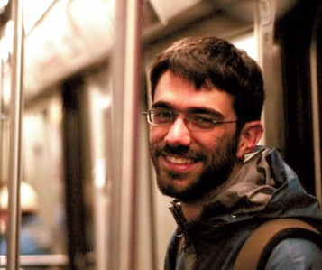
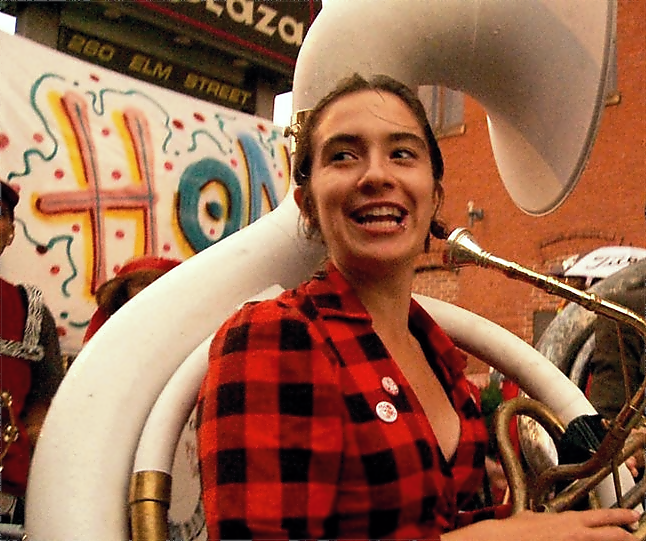

Our Team

Alec Resnick
Alec cares about the tools we use to think, learn, and explore. Before sprout, he studied math & physics at MIT and co-founded nublabs, an electromechanical design consultancy.

Shaunalynn Duffy
Shaunalynn is deeply interested in what makes for a healthy learning community. Before sprout, she studied environmental engineering & writing at MIT.

Michael Nagle
Nagle's passionate about building environments for sustainable inquiry for kids & adults. Before sprout, he co-founded Camp Kaleidoscope (now Parts & Crafts) and the Kaleidoscope Center.